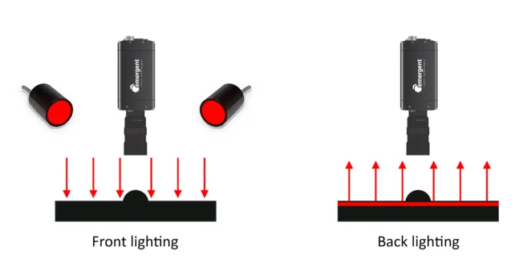
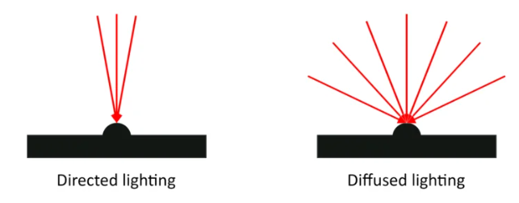
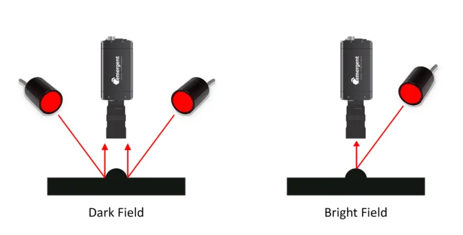

| 대상 색상 | 같은 계열 조명 | 보색 조명 |
|---|---|---|
| 빨간색 이물/마킹 | 빨간 조명 → 밝게 강조 | 초록/청록 조명 → 어둡게 강조 |
| 초록색 PCB | 초록 조명 → 밝게 | 보라/빨강 계열 조명 → 대비 강조 |
| 대역 | 대표 파장 | 주요 용도 |
|---|---|---|
| UV | 약 365~405nm | 형광 반응 유도로 미세 크랙·이물·코팅 상태 검출 |
| Visible | 약 450~660nm | 일반 색상 판별, 표면 대비 검사 |
| NIR | 약 780~940nm | 표면 코팅·필름을 투과해 내부 확인, 정반사 글레어 감소 |
| SWIR | 약 1050~1650nm | 수분 함량, 재질 성분 차이 판별 (가시광선으로는 구분 불가한 소재 구분) |